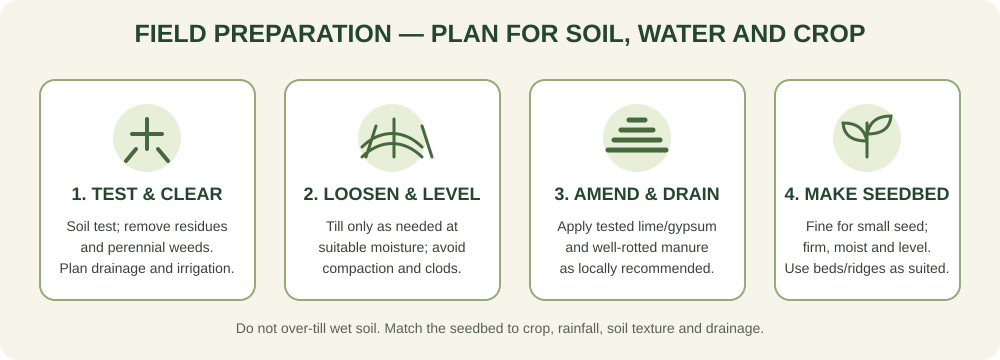

THE FIELD GUIDE · INDIA
Crop practices,
clearly in one place.
Find practical guidance by crop: suitable soil, planting window and method, water demand and critical stages, weeds, nutrient timing, and harvest signs.
Use local recommendations for the final field plan.
Months, varieties, fertilizer rates and irrigation intervals vary by state, district, season and soil test. Doses below are indicative planning ranges—not universal prescriptions. Weed names are common examples; local weed flora varies. Confirm with your State Agricultural University (SAU), Krishi Vigyan Kendra (KVK) or agriculture department.
Watermm/day is approximate crop evapotranspiration (ETc), not an irrigation depth. Rice-field seepage/percolation is additional.
NutritionRates are kg/ha of N–P₂O₅–K₂O. Apply only after soil testing and follow the local split schedule.
ProductivityYield ranges are indicative managed-field ranges, not official all-India averages. See the India snapshot for the estimate year and source.
BEFORE SOWING
A reliable land-preparation sequence
- Test and plan. Sample soil, map wet/dry patches, clear perennial weeds and plan drainage/irrigation.
- Work at the right moisture. Loosen only as needed; avoid tilling wet soil, compaction and excessive pulverizing.
- Amend from evidence. Incorporate well-rotted organic matter; apply lime, gypsum or nutrients only when the soil test/local recommendation calls for them.
- Make a crop-fit seedbed. Use a fine, firm bed for small seed; beds/ridges where drainage is needed. Puddle only for suitable lowland rice systems.

0 matching practice guides
No crop practice matches your search. Clear the search or choose another group.
REFERENCES & FIELD VERIFICATION
Check the current local package.
This guide is a general learning reference. Use the latest locally released recommendations for variety choice, exact sowing dates, seed rate, nutrients, and any registered weed-control product.